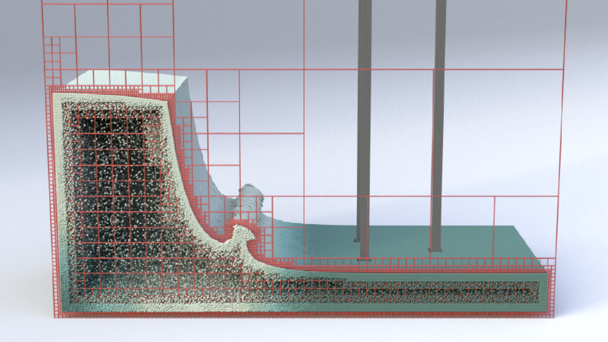
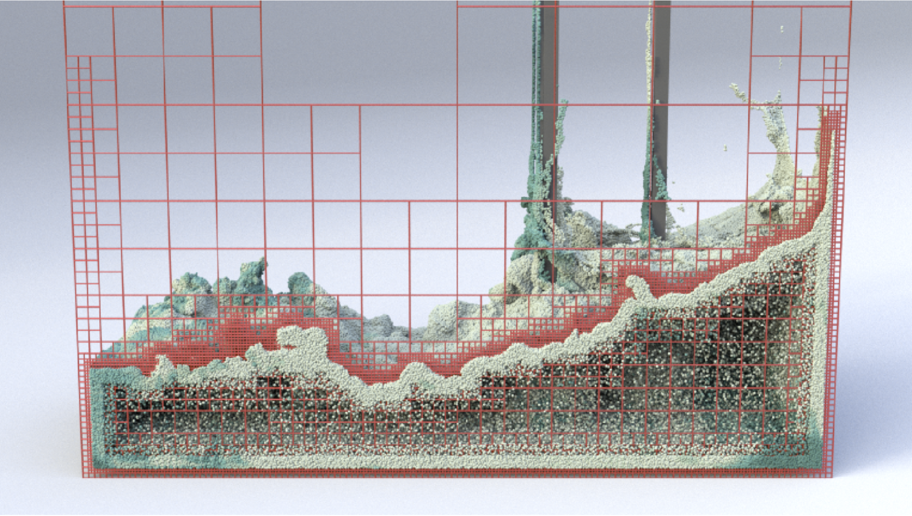
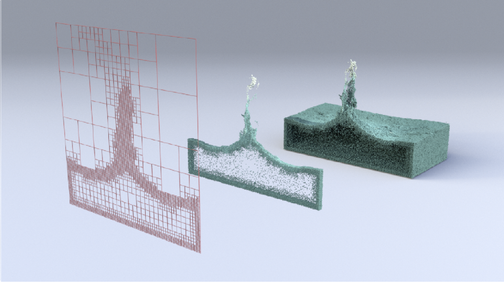

We introduce a novel liquid simulation approach that combines a spatially adaptive pressure projection solver with the Particle-in-Cell (PIC) method. The solver relies on a generalized version of the Finite Difference (FD) method to approximate the pressure field and its gradients in tree-based grid discretizations, possibly non-graded. In our approach, FD stencils are computed by using meshfree interpolations provided by a variant of Radial Basis Function (RBF), known as RBF-Finite-Difference (RBF-FD). This meshfree version of the FD produces differentiation weights on scattered nodes with high-order accuracy. Our method adapts a quadtree/octree dynamically in a narrow-band around the liquid interface, providing an adaptive particle sampling for the PIC advection step. Furthermore, RBF affords an accurate scheme for velocity transfer between the grid and particles, keeping the system’s stability and avoiding numerical dissipation. We also present a data structure that connects the spatial subdivision of a quadtree/octree with the topology of its corresponding dual-graph. Our data structure makes the setup of stencils straightforward, allowing its updating without the need to rebuild it from scratch at each time-step. We show the effectiveness and accuracy of our solver by simulating incompressible inviscid fluids and comparing results with regular PIC-based solvers available in the literature.
We want to thank Fabrício Simeoni de Sousa and Antonio Castelo for insightful discussions throughout this work, and the SIGGRAPH Asia reviewers for their comments. We also thank Cristin Barghiel from SideFX for their kind donation of the Houdini licenses and Leonardo Martinussi for the computing infrastructure at ICMC-USP. This study was financed in part by the Coordenação de Aperfeiçoamento de Pessoal de Nível Superior - Brazil (CAPES), National Council for Scientific and Technological Development - Brazil (CNPq) fellowship #301642/2017-6, and São Paulo Research Foundation (FAPESP) under grants #2018/06145-4 and #2019/23215-9. The computational resources were provided by the Center for Mathematical Sciences Applied to Industry (CeMEAI), also funded by FAPESP (grant #2013/07375).
@article{ Nakanishi2020RBF,
author = {Nakanishi, Rafael and Nascimento, Filipe and Campos, Rafael and
Pagliosa, Paulo and Paiva, Afonso},
title = {{RBF Liquids: An Adaptive PIC Solver Using RBF-FD}},
year = {2020},
issue_date = {December 2020},
publisher = {Association for Computing Machinery},
address = {New York, NY, USA},
volume = {39},
number = {6},
issn = {0730-0301},
url = {https://doi.org/10.1145/3414685.3417794},
doi = {10.1145/3414685.3417794},
journal = {ACM Trans. Graph.},
month = nov,
articleno = {170},
numpages = {13},
keywords = {radial basis function (RBF), particle-in-cell (PIC), liquid animation, adaptive grids}
}